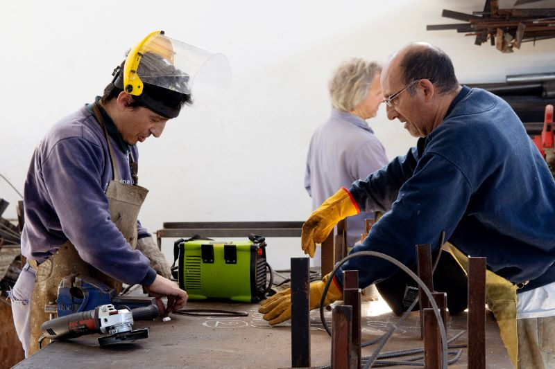

Profesionales verificados
A tu servicio
Conectamos personas con trabajadores de confianza
Conocé más
Conectamos personas con trabajadores de confianza
Conocé más
Organizá y seguí cada servicio desde un solo lugar
Registrate gratisServiTrack une a quienes necesitan un trabajo con profesionales de confianza de la zona, y permite seguir cada servicio de principio a fin.
Elegí el rubro que necesitás: electricidad, plomería, pintura, carpintería y más.
Mirá en el mapa los profesionales disponibles cerca de tu domicilio.
Controlá el estado de cada trabajo y calificá al profesional al terminar.
Usá la lupa del mapa para buscar una dirección dentro de Rosario.